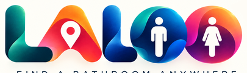
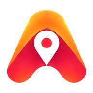

Find a bathroom anywhere
📍 Near me
All
🚻 Public
☕ Cafés
⭐ Tips

Add Laloo to your home screen
One tap to the nearest bathroom. No app store.
Add
✕
➕ Add a bathroom
Add a bathroom
Place name
Where is it?
Use my current location
Tip for others (optional)
Send
Close
Own a business nearby? Advertise on Laloo
Privacy
Close